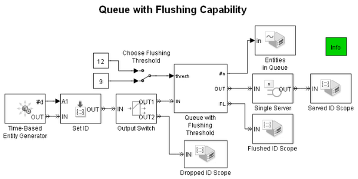
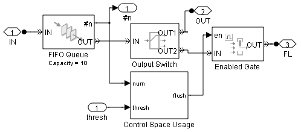

Queue with Flushing Capability
Contents
Overview
This model demonstrates how to reduce the length of a queue by having some number of entities depart via a special entity output port.
Structure
Unlike timeout events, which determine how long each entity can stay in the queue, the flushing occurrences in this model depend only on the number of entities in the queue relative to a threshold. This flushing queue simulates the behavior of a ring buffer.
The Queue with Flushing Threshold subsystem (Fig. 1) has a signal input port labeled thresh that represents the threshold for flushing the queue. Inside the subsystem, a FIFO Queue block stores entities, while the Control Space Usage subsystem compares the queue length to the threshold. If the queue length exceeds the threshold, the Enabled Gate block permits enough entities to depart from the queue until the queue length no longer exceeds the threshold. (Flushing succeeds as long as the Enabled Gate block's OUT port is not blocked.)
Fig.1 Queue with Flushing Threshold Subsystem
Plots show:
- “Dropped entities” that fail to enter the queue because the queue is full
- Flushed entities that depart from the queue because the queue length exceeds the threshold
Using these plots, you can observe that
- If the threshold is 9 and the queue capacity is 10, then flushing of one entity occurs each time the queue becomes full to capacity, and no dropping occurs.
Plots with Threshold = 9
Experimention
Set the threshold to 12 and let the queue capacity be 10. Observe that the dropping occurs when entities attempt to arrive at a full queue, and no flushing occurs.